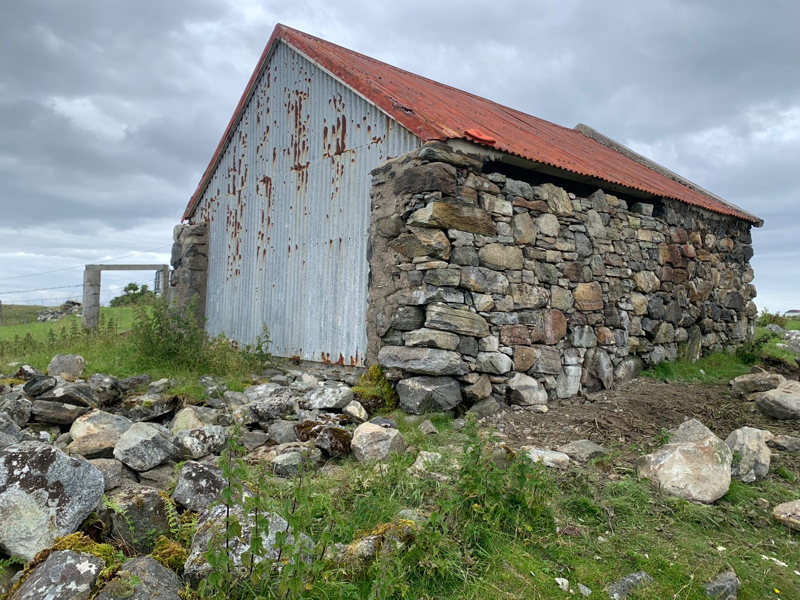

Lonemore New Build 2024
Grimsay Retaining Wall New Build 2024
Melvaig Repairs 2024

Lochmaddy Byre Repair 2024

Aultbea Garden Wall Repair 2024
Manse Repairs 2024

Mellon Charles 23-24
New build project with locally quarried stone.
Lechnasaid Repair
Repair to a roadside wall affected by tree growth and vibrations from the nearby road.
Struan Byre Rebuild
Rebuild of collapsed byre to provide shelter for solar panels
Struan New Build Project
Blockwork for external facing of new build cottage on North Uist. Collaboration with Hebridean Thatching.